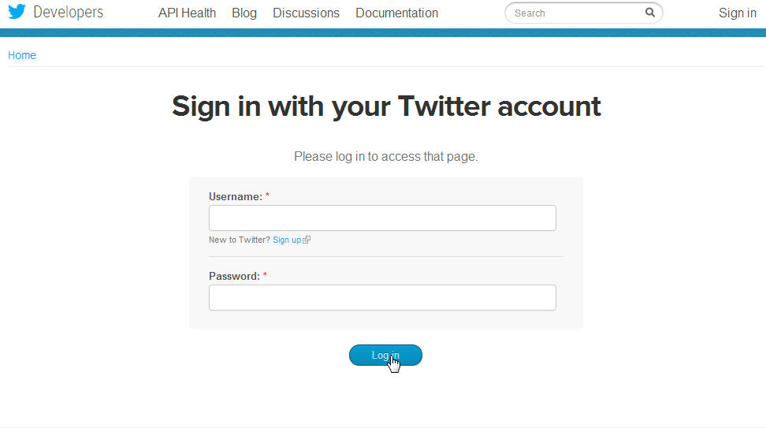

Welcome to the Custom Twitter widget documentation, I will explain how to set up the widget
To make the twitter widget works you will need 4 unique key, to get those key click on find or create your twitter app on the top of the widget or click directly here http://dev.twitter.com/apps
First of all you will need to log with your twitter account.
When you are logged you will be moved to the application page, click on create new a application
Enter a name, description, website, agree to the developer rules enter the captcha and create your application
You should be moved to your new application page, on the bottom of the page you should see Create my access token button, click on it
After clicking on create my access token click on the OAuth tool on the top of the page, on the OAuth settings page you will have all the necessary key for the widget,
Copy and paste the key to the twitter widget
It may takes a little time before the widget works since your keys has just been created, wait like 10 - 15 minutes, if it's still doesn't work please contact us